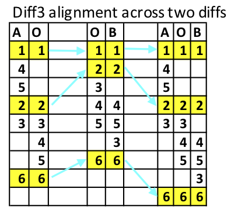

The example is based on this paper, "A Formal Investigation of Diff3" [3]. It explains how the two two-way diffs are aligned. It is useful to understand this in order to see how it might affect tree-structured data.
The example consists of three text files with numbers on each line, A, B and the 'old' file O, as shown below:
Table 1.
| A.txt | O.txt | B.txt |
|---|---|---|
1
4
5
2
3
6
|
1 2 3 4 5 6 |
1
2
4
5
3
6
|
The way these numbers are combined into the two diffs, A+O and O+B, is shown in the table below.

The last three columns show how the two diffs are combined. Note that the yellow match shows where all three files align. This alignment is important because it is the data between these alignment points that are considered as units of change. Now we can look at the diff3 output using the -m option:
1 4 5 2 <<<<<<< A.txt 3 ||||||| O.txt 3 4 5 ======= 4 5 3 >>>>>>> B.txt 6
This output shows that the '4 5' sequence has been accepted as the only possibility between the '1' and the '2', but between the '2' and the '6' we have three possible choices, which are listed in the output. We do not want to get diverted into a discussion about alignment algorithms, nor whether or not this is appropriate for tree-structured data. The point here is that the positions in the files at which they all three align are considered 'anchor' points, and all of the data between is considered to be a choice - and when there is some kind of conflict, the choice is left for the user to select.
There is an interesting consequence of this structure: it is not possible to have two consecutive choices without a separator that is due to a commonality between all three files, i.e., an anchor point. Although for structured data it would be natural, for example, to provide choices about attributes in a manner that allows each attribute to be chosen separately, the diff3 format dictates that two adjacent changes are seen as one choice. For structured data such as XML, it may be possible to get round this by artificially creating anchor points that are white space which is not relevant to the result. However, this is not ideal, partly because diff3 would not create such artificial anchor points and, therefore, the subsequent change to the layout of the files would not be expected by the user.
The diff3 format provides a way to delineate the three choices, though not all of them may be present. Each choice is independent of any other choice, and there is no connection between them. This independence presents a problem for tree-structured data because there is a dependency between, for example, inserting a start tag and inserting the corresponding end tag; unless these insertions are done as a single choice, the result will not be well-formed. This problem can always be overcome by duplicating some of the data, and the argument here is very similar to that presented at this conference last year regarding change to both content and structure [4]. Duplication can work well when the span of the change is small because very little data needs to be duplicated, but when the span is larger, more data needs to be duplicated and the nature of the change is lost in this duplication. In the extreme, duplication of the entire contents of an XML file will always yield a choice between well-formed fragments because each fragment is the entire file. This is correct but, of course, of little practical use.
We will look at some examples of changes to attributes where we can, with some manipulation of the data, present choices where the selection of any one of the two or three choices will provide a well-formed result.